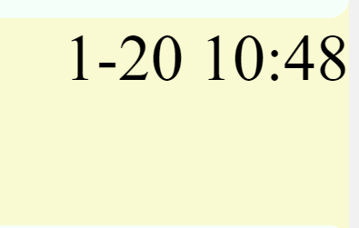

Home
date

The meticulous timestamping of every message is a key feature that enhances the overall communication experience within our platform at Friends of Ngong Hills. This feature plays a pivotal role in maintaining a clear and organized record of the conversation, contributing to a seamless and meaningful exchange of ideas among community members.
Chronological Record: Each message is assigned a timestamp that reflects the exact time it was sent. This chronological record ensures that messages are neatly arranged in the order they were posted. As a result, participants can effortlessly trace the flow of the conversation over time, providing context and coherence to discussions.
Enhanced Followability: The timestamp feature greatly improves the followability of discussions. Participants can easily track the progression of the conversation, understand when specific points were raised, and identify the sequence of events within the dialogue. This chronological clarity fosters a deeper engagement with the content and encourages active participation.
Reference and Reflection: Timestamps serve as reference points, allowing participants to refer back to earlier messages and key moments in the conversation. This capability is particularly valuable for members who may join discussions at different times or for those who wish to revisit specific topics. It promotes a reflective and informed dialogue within the community.
Orderly Discussions: By timestamping messages, our platform cultivates an environment where discussions unfold in an orderly manner. This ensures that participants can easily discern the context and progression of the conversation, leading to more coherent and focused exchanges of ideas.
User-Friendly Interface: The implementation of timestamps is seamlessly integrated into the user interface, enhancing the overall user experience. The intuitive design ensures that participants can effortlessly navigate and comprehend the timeline of discussions, contributing to a positive and user-friendly interaction.
In essence, the meticulous timestamping feature is a valuable component of our platform's communication infrastructure. It goes beyond mere timekeeping by providing a tool for members to engage meaningfully, follow discussions coherently, and refer back to important points. This feature aligns with our commitment to fostering a vibrant and informed community at Friends of Ngong Hills, where every conversation is both dynamic and accessible.